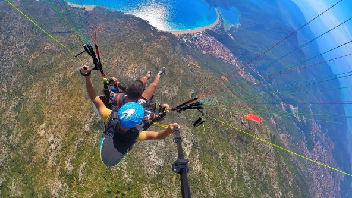
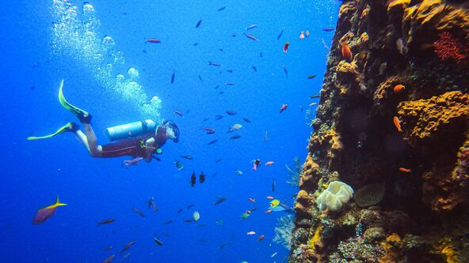
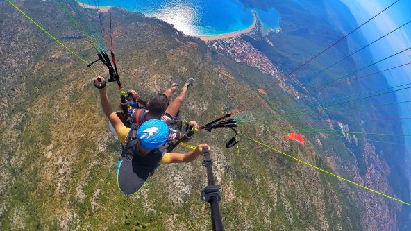
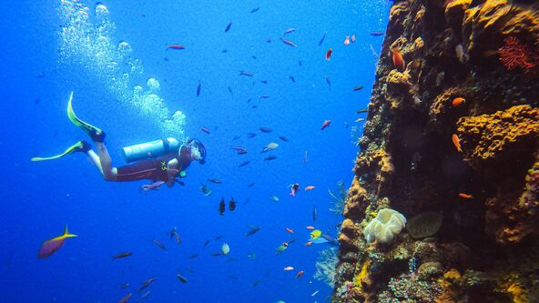

Passeios terrestres, aquáticos e aéreos.
Os passeios terrestres cativam aventureiros, permitindo exploração a pé, de bicicleta ou em veículos, proporcionando imersão na autenticidade dos cenários.
Saiba mais »Passeios aquáticos oferecem uma variedade de experiências, conectando os aventureiros com a beleza dos ambientes marinhos, de rios tranquilos a aventuras vibrantes.
Saiba mais »Seja flutuando suavemente em passeios de balão ou sobrevoando paisagens exuberantes em helicópteros, os passeios aeros elevam a experiência, proporcionando aos exploradores um espetáculo celestial de tirar o fôlego.
Saiba mais » 



A Brasil Tour nasceu do profundo desejo de explorar as riquezas deslumbrantes de nosso país. Inspirados pela diversidade cultural, pelas paisagens exuberantes e pelo calor humano, buscamos transformar a simples vontade de viajar em experiências inesquecíveis. Mesmo sem asas, alçamos voo com a imaginação e a paixão por desbravar os recantos fascinantes do Brasil.
“Somos uma comunidade de visionários, onde para nós, nem mesmo o horizonte é o limite.” - Fundador da Brasil Tour